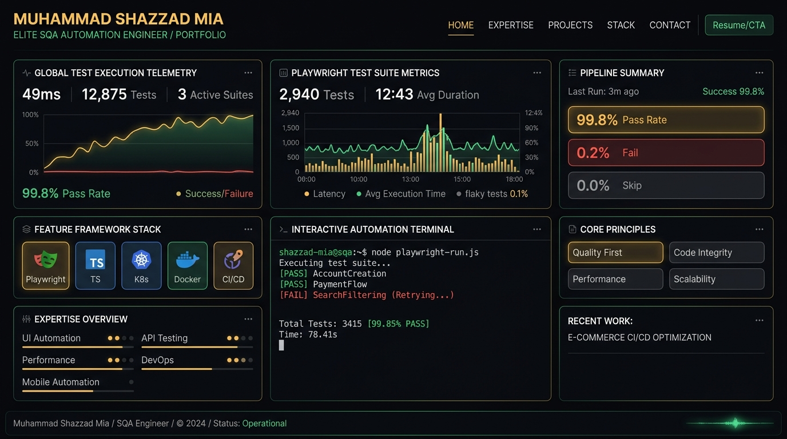
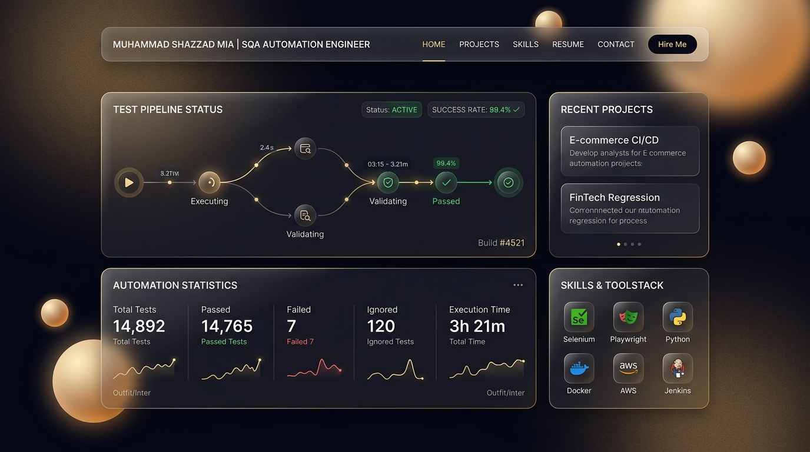
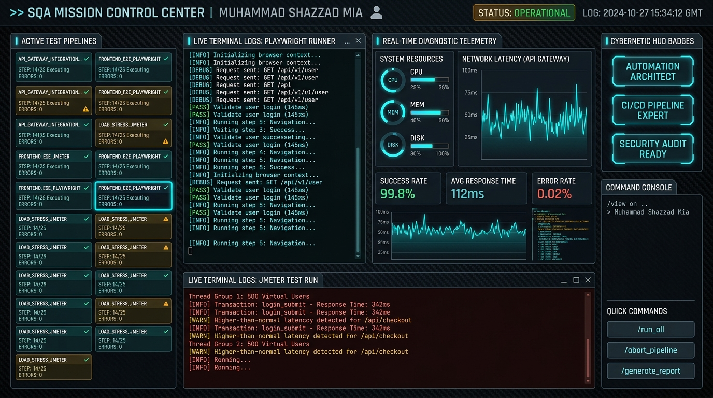

Option 1: High-Tech Precision Engineering TOP RECOMMENDATION
Linear & Raycast inspired developer tool aesthetic with deep obsidian canvas, 1px amber/emerald micro-borders, and dense telemetry bento grid.

🎨 Color Harmony & Tokens
- Canvas: Velvet Obsidian (#07070a / 3% lightness)
- Borders: 1px glowing Amber (#f59e0b) & Emerald (#10b981)
- Cards: Smoked Obsidian Glass (rgba(14, 15, 22, 0.8))
📐 Layout & Bento Architecture
- Telemetry Grid: Real-time suite statistics (2,940 tests, 99.8% pass rate).
- Live Runner: Interactive command-line simulation box with real-time logs.
- Visual-First: 70% data telemetry chips, 30% concise narrative copy.
⚡ Recruiter & Engineering Impact
- Target Audience: Silicon Valley tech leads, VP of Eng, US/EU recruiters.
- Perception: Elite, rigorous, modern test automation architect.
- Ergonomics: Highest scannability with zero cognitive clutter.
Option 2: Modern Frosted Glassmorphism & Fluid Gradients
Stripe & Apple inspired luxury tech craft with velvet dark obsidian, soft glowing ambient orbs, and translucent frosted glass cards.

🎨 Color Harmony & Tokens
- Canvas: Cosmic Slate (#080a10) with warm ambient glow orbs
- Refraction: Multi-layered frosted glass (backdrop-blur-2xl)
- Accents: Champagne Gold, Amber Glow, and Emerald Badges
📐 Layout & Interactive Nodes
- Pipeline Graph: Visual multi-node flow (Execute → Validate → Pass).
- Floating Pill Nav: Elevated glass header with smooth hover states.
- Physics Springs: Silky Framer Motion gesture feedback.
⚡ Recruiter & Engineering Impact
- Wow Factor: Extremely prestigious and luxurious visual polish.
- Emotional Hook: Looks like a million-dollar venture-backed product.
Option 3: Technical QA Command Center & Terminal HUD
Cybernetic mission control dashboard featuring real-time test execution pipelines, split live terminal streams, and cybernetic HUD badges.

🎨 Color Harmony & Tokens
- Canvas: Technical Graphite (#0b0d11) with carbon texture
- Telemetry Neon: Cyber Cyan (#06b6d4) & Live Amber (#f59e0b)
- Status Badges: Matrix glowing indicators for active suites
📐 Layout & Mission Control
- Multi-Pipeline View: Parallel execution status for E2E & Load tests.
- Split Terminal: Simultaneous Playwright & JMeter console output.
- Telemetry Graphs: API gateway network latency and CPU telemetry.
⚡ Recruiter & Engineering Impact
- Technical Credibility: Irrefutable proof of high-concurrency QA mastery.
- Best For: High-frequency trading and mission-critical enterprise roles.
Option 4: Minimalist Swiss Editorial (Vercel & Dieter Rams)
Pure monochrome typography, expansive architectural whitespace, razor-thin geometric dividers, and high-contrast metrics.
ENGINEERING DETERMINISTIC
TEST AUTOMATION AT SCALE.
SQA Automation Engineer II at Brain Station 23. Specializing in hermetic Playwright TypeScript architectures, JMeter volumetric load testing, and enterprise CI/CD gates for 10M+ user platforms.
🎨 Color Harmony & Tokens
- Canvas: Pitch Obsidian Black (#000000)
- Typography: Platinum White (#ffffff) & Slate Grey (#94a3b8)
- Accent: Singular amber focal dot (#f59e0b)
📐 Layout & Typography
- Dieter Rams Principles: "Less, but better." Zero decorative fluff.
- Architecture: Geometric grid with tabular data cells.
⚡ Recruiter & Engineering Impact
- Perception: Sophisticated, confident, purist software engineer.
- Performance: Near instantaneous render speeds.
Direct Side-by-Side Aesthetic Comparison
Evaluate all 4 options simultaneously across visual appeal, recruiter conversion, and UX ergonomics.
| Evaluation Dimension | 1: Linear Precision (Recommended) | 2: Stripe Glassmorphism | 3: QA Command Center | 4: Swiss Minimalist |
|---|---|---|---|---|
| Visual Wow Factor | ⭐⭐⭐⭐⭐ | ⭐⭐⭐⭐⭐ | ⭐⭐⭐⭐ | ⭐⭐⭐ |
| SQA Alignment | ⭐⭐⭐⭐⭐ | ⭐⭐⭐⭐ | ⭐⭐⭐⭐⭐ | ⭐⭐⭐⭐ |
| Cognitive Ergonomics | ⭐⭐⭐⭐⭐ | ⭐⭐⭐⭐ | ⭐⭐⭐ | ⭐⭐⭐⭐⭐ |
| Recruiter Impact | ⭐⭐⭐⭐⭐ | ⭐⭐⭐⭐⭐ | ⭐⭐⭐⭐ | ⭐⭐⭐⭐ |
| Mobile Responsiveness | ⭐⭐⭐⭐⭐ | ⭐⭐⭐⭐ | ⭐⭐⭐ | ⭐⭐⭐⭐⭐ |